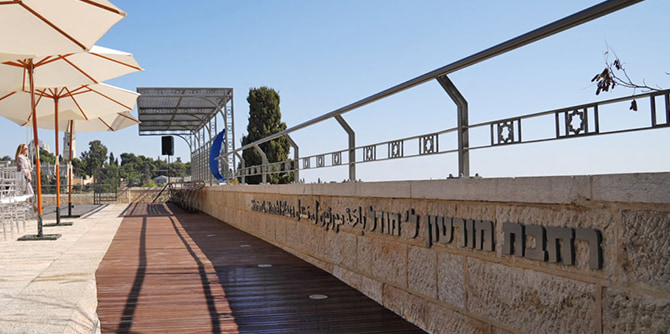
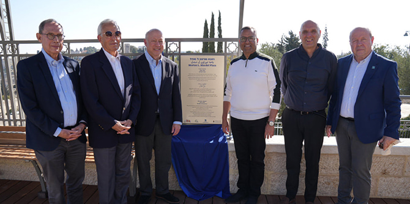
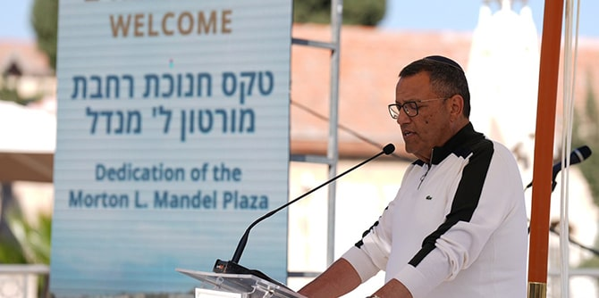
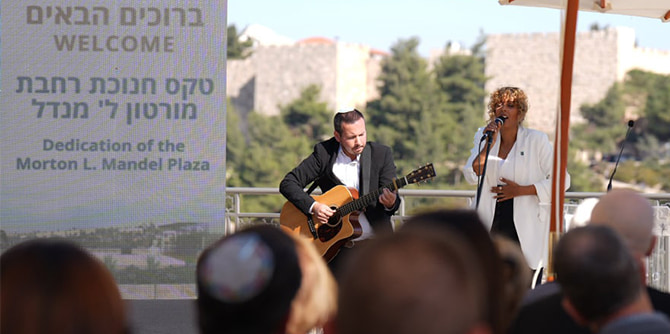

The Morton L. Mandel Plaza (Photo: Simanim)
On November 18, the new Morton L. Mandel Plaza was dedicated by the city of Jerusalem and the Jerusalem Foundation. The plaza is located at a prominent site near the historic Montefiore Windmill, which the city refurbished with new stone benches and seating areas that overlook the Old City of Jerusalem. The city decided to name the site after Morton L. Mandel, who had been awarded a special “Builder of Jerusalem” citation in his lifetime, in recognition of his active involvement in Israel and of the Mandel Foundation's extensive support for institutions and initiatives across Jerusalem.
The event was attended by Jerusalem
Mayor Moshe Lion, Director General of the Jerusalem Municipality
Itzik Larry, President of the Jerusalem Foundation
Shai Doron, President and CEO of the Mandel Foundation
Professor Jehuda Reinharz, Chairman of the Board of the Mandel Foundation
Steve Hoffman, Mandel Foundation–Israel Director General
Moshe Vigdor, the Boards of Trustees of the Mandel Foundation and Parkwood, and members of the leadership, faculty, and staff of the Mandel Foundation–Israel.

Left to Right: Minister of Diaspora Affairs Nachman Shai, Mandel President and CEO Professor Jehuda Reinharz, Mandel Chairman of the Board Steve Hoffman, Jerusalem Mayor Moshe Lion, President of the Jerusalem Foundation Shai Doron, and Mandel Foundation–Israel Director General Moshe Vigdor with the plaza plaque (Photo: Simanim)
Mayor Moshe Lion unveiled the plaza’s new plaque, which says the following in Hebrew, Arabic and English:

Mayor Moshe Lion, speaking at the dedication (Photo: Simanim)
Mayor Lion spoke about the Mandel Foundation’s commitment to the welfare of the city of Jerusalem, which can be seen from its support for the
Jack, Joseph and Morton Mandel Community Sports Center, the first community sports center in East Jerusalem, which is currently being built in Beit Hanina. He alluded to the dream that he and Mort shared for the city of Jerusalem: a vision of peace.
Shai Doron, President of The Jerusalem Foundation, acknowledged the Foundation’s support for SidraTarbut, a series of free summer cultural events that takes place throughout the city and makes culture accessible to all sectors of Israeli society.
In his speech,
Professor Jehuda Reinharz noted the similarities between Morton Mandel and Moses Montefiore. Montefiore purchased the area of Mishkenot Sha’ananaim in the mid-1800s and built homes and a windmill there, thereby establishing the first Jewish neighborhood outside of the Old City. Both men were self-made businessmen living outside of Israel who were dedicated to the city of Jerusalem and who witnessed many developments in the city over the course of their lives. “Mort Mandel appreciated the beauty and history of the city and adorned its landscape with buildings that are as outstanding as they are organic to its features,” said Professor Reinharz, adding that the Mandel Foundation contributes to the improvement of the city’s cultural life and academic institutions, in effect continuing the work that Moses Montefiore began over 150 years ago. “Thank you to the city of Jerusalem and to The Jerusalem Foundation for allowing Mort’s legacy to live on in this beautiful place,” he said in conclusion.

Performance of “Jerusalem of Gold” (Photo: Simanim)
{kind=link}
{kind=link}
{kind=link}
{kind=link}